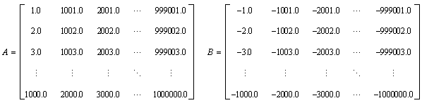

Intel MKL provides several routines for multiplying matrices. The most widely used is the dgemm routine, which calculates the product of double precision matrices:

The dgemm routine can perform several calculations. For example, you can perform this operation with the transpose or conjugate transpose of A and B. The complete details of capabilities of the dgemm routine and all of its arguments can be found in the ?gemm topic in the Intel Math Kernel Library Developer Reference.
Use dgemm to Multiply Matrices
This exercise demonstrates declaring variables, storing matrix values in the arrays, and calling dgemm to compute the product of the matrices. The arrays are used to store these matrices:

The one-dimensional arrays in the exercises store the matrices by placing the elements of each column in successive cells of the arrays.
Note
The Fortran source code for the exercises in this tutorial can be downloaded from https://software.intel.com/en-us/product-code-samples.
Although Intel MKL supports Fortran 90 and later, the exercises in this tutorial use FORTRAN 77 for compatibility with as many versions of Fortran as possible.
* Fortran source code is found in dgemm_example.f
PROGRAM MAIN
IMPLICIT NONE
DOUBLE PRECISION ALPHA, BETA
INTEGER M, K, N, I, J
PARAMETER (M=2000, K=200, N=1000)
DOUBLE PRECISION A(M,K), B(K,N), C(M,N)
PRINT *, "This example computes real matrix C=alpha*A*B+beta*C"
PRINT *, "using Intel® MKL function dgemm, where A, B, and C"
PRINT *, "are matrices and alpha and beta are double precision "
PRINT *, "scalars"
PRINT *, ""
PRINT *, "Initializing data for matrix multiplication C=A*B for "
PRINT 10, " matrix A(",M," x",K, ") and matrix B(", K," x", N, ")"
10 FORMAT(a,I5,a,I5,a,I5,a,I5,a)
PRINT *, ""
ALPHA = 1.0
BETA = 0.0
PRINT *, "Intializing matrix data"
PRINT *, ""
DO I = 1, M
DO J = 1, K
A(I,J) = (I-1) * K + J
END DO
END DO
DO I = 1, K
DO J = 1, N
B(I,J) = -((I-1) * N + J)
END DO
END DO
DO I = 1, M
DO J = 1, N
C(I,J) = 0.0
END DO
END DO
PRINT *, "Computing matrix product using Intel® MKL DGEMM "
PRINT *, "subroutine"
CALL DGEMM('N','N',M,N,K,ALPHA,A,M,B,K,BETA,C,M)
PRINT *, "Computations completed."
PRINT *, ""
PRINT *, "Top left corner of matrix A:"
PRINT 20, ((A(I,J), J = 1,MIN(K,6)), I = 1,MIN(M,6))
PRINT *, ""
PRINT *, "Top left corner of matrix B:"
PRINT 20, ((B(I,J),J = 1,MIN(N,6)), I = 1,MIN(K,6))
PRINT *, ""
20 FORMAT(6(F12.0,1x))
PRINT *, "Top left corner of matrix C:"
PRINT 30, ((C(I,J), J = 1,MIN(N,6)), I = 1,MIN(M,6))
PRINT *, ""
30 FORMAT(6(ES12.4,1x))
PRINT *, "Example completed."
STOP
ENDNote
This exercise illustrates how to call the dgemm routine. An actual application would make use of the result of the matrix multiplication.
This call to the dgemm routine multiplies the matrices:
CALL DGEMM('N','N',M,N,K,ALPHA,A,M,B,K,BETA,C,M)The arguments provide options for how Intel MKL performs the operation. In this case:
- 'N'
Character indicating that the matrices A and B should not be transposed or conjugate transposed before multiplication.
- M, N, K
Integers indicating the size of the matrices:
A: M rows by K columns
B: K rows by N columns
C: M rows by N columns
- ALPHA
Real value used to scale the product of matrices A and B.
- A
Array used to store matrix A.
- M
Leading dimension of array A, or the number of elements between successive columns (for column major storage) in memory. In the case of this exercise the leading dimension is the same as the number of rows.
- B
Array used to store matrix B.
- K
Leading dimension of array B, or the number of elements between successive columns (for column major storage) in memory. In the case of this exercise the leading dimension is the same as the number of rows.
- BETA
Real value used to scale matrix C.
- C
Array used to store matrix C.
- M
Leading dimension of array C, or the number of elements between successive columns (for column major storage) in memory. In the case of this exercise the leading dimension is the same as the number of rows.
Compile and Link Your Code
Intel MKL provides many options for creating code for multiple processors and operating systems, compatible with different compilers and third-party libraries, and with different interfaces. To compile and link the exercises in this tutorial with Intel® Parallel Studio XE Composer Edition, type
- Windows* OS: ifort /Qmkl src\dgemm_example.f
- Linux* OS, macOS*: ifort -mkl src/dgemm_example.f
Alternatively, you can use the supplied build scripts to build and run the executables.
- Windows* OS:
build build run_dgemm_example
- Linux* OS, macOS*:
make make run_dgemm_example
For the executables in this tutorial, the build scripts are named:
Example |
Executable |
|---|---|
dgemm_example.f |
run_dgemm_example |
dgemm_with_timing.f |
run_dgemm_with_timing |
matrix_multiplication.f |
run_matrix_multiplication |
dgemm_threading_effect_example.f |
run_dgemm_threading_effect_example |
Note
This assumes that you have installed Intel MKL and set environment variables as described in https://software.intel.com/en-us/articles/intel-math-kernel-library-intel-mkl-2019-getting-started.
For other compilers, use the Intel MKL Link Line Advisor to generate a command line to compile and link the exercises in this tutorial: http://software.intel.com/en-us/articles/intel-mkl-link-line-advisor/.
After compiling and linking, execute the resulting executable file, named dgemm_example.exe on Windows* OS or a.out on Linux* OS and macOS*.
Optimization Notice |
|---|
Intel's compilers may or may not optimize to the same degree for non-Intel microprocessors for optimizations that are not unique to Intel microprocessors. These optimizations include SSE2, SSE3, and SSSE3 instruction sets and other optimizations. Intel does not guarantee the availability, functionality, or effectiveness of any optimization on microprocessors not manufactured by Intel. Microprocessor-dependent optimizations in this product are intended for use with Intel microprocessors. Certain optimizations not specific to Intel microarchitecture are reserved for Intel microprocessors. Please refer to the applicable product User and Reference Guides for more information regarding the specific instruction sets covered by this notice. Notice revision #20110804 |